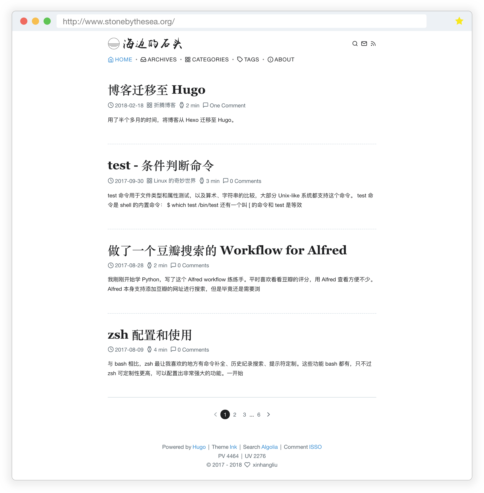

博客迁移至 Hugo
用了半个多月的时间，将博客从 Hexo 迁移至 Hugo。
距离上一次更新博客，已经有 4 个多月了。期间确实比以往忙些，但根本原因是犯懒。思来想去，我还是觉得博客这个坑暂时不能弃。于是一个月前，我开始查阅对比多个博客平台和工具，希望从 Hexo 迁移出去。最终仍然决定选择静态博客，只是换成另一款静站生成器：Golang 写的 Hugo。
从 Hexo 迁移出去，一方面是想换换口味，之前用的是 Hexo 里非常流行的 NexT 主题，主题非常棒，无奈用的人实在太多，于是萌生了自己做一个主题的想法；另一方面我打算学习 Golang，于是就选择了 Hugo。
这半个月所做的
感觉国内用 Hugo 的人真的没有用 Hexo 的多，遇到问题根本搜不出多少中文结果。之前没接触过前端，只能慢慢从官方文档读起，经过半个多月的挣扎，最终完成了我自己的博客主题：Ink（名字没想好，用这个先）。该有的功能差不多都有了吧：
- 集成 Algolia 搜索
- 集成 ISSO 评论（self-host）
- Mathjax 公式编写
- 代码行号，复制源码，Highlight.js 高亮支持
- fancyBox 图片浏览
- 不蒜子站点流量统计
- 有字库中文字体
除以上功能，主题在基本的方面也做了努力：
- 自定义（菜单、链接、文章 meta）排序和显示
- Pagination 分页逻辑
- 文章目录
- 返回顶部
看不见的努力有：
CSS、Javascript、Hugo 入门
采用 Hugo 本身生成 Algolia index，然后用 Python 写了段小脚本用来更新
Shell 脚本实现一键部署
ISSO 评论在服务器上的部署
保不齐那天我又换了个主题或平台，所以截图留个念：
